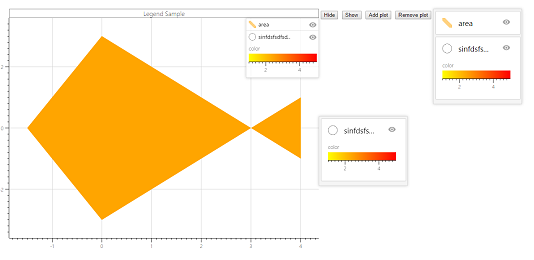
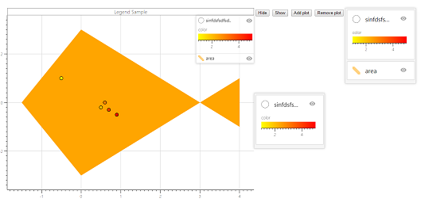
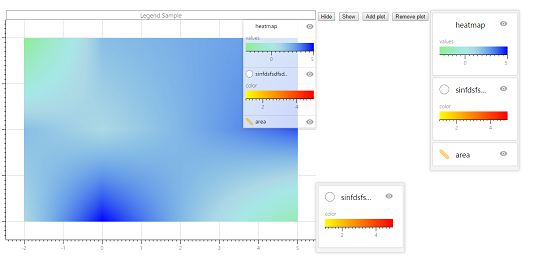
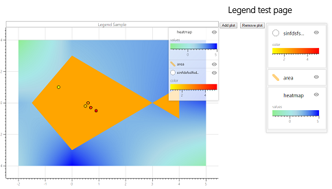
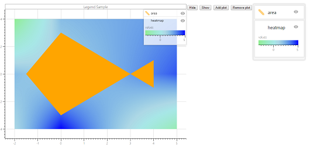

[State 0] On this page you should see chart containing 2 elements: area and markers. Also you should see 2 legends (one of them is compact).

[User Action 1] Reorder two elements in right legend.

[User Action 2] Click 'Add plot' button.

[User Action 3] Reorder elements: first element - markers, second - area, third - heatmap.

[User Action 4] Click 'Remove plot' button.
